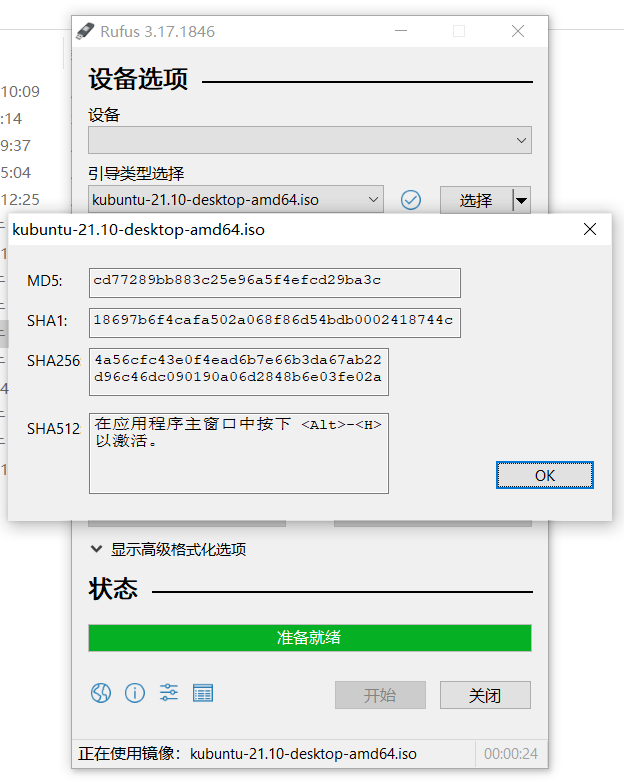
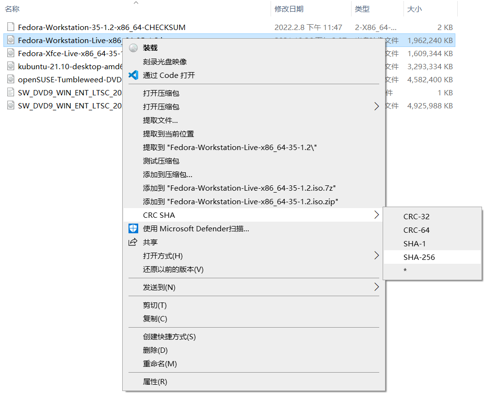

安装前准备
本文主要描述安装 Linux 前应当做的一些预备工作。
最低硬件需求
对于本项目所涉及的 Linux 发行版的最低硬件要求如下所示：
openSUSE Tumbleweed & openSUSE Leap：
- 1.6 GHz 或更高的处理器（推荐奔腾 4 2.4 GHz或更高的处理器或任何 AMD64 或 Intel64 处理器）；
- 1GB 物理内存（推荐 4GB 或以上）；
- 10GB 的可用磁盘空间用于最小的安装，16GB 的可用磁盘空间用于图形化桌面（日常使用建议 40GB 或更多）；
- 支持大多数现代声卡和显卡，800x600 的显示分辨率（推荐 1024 x 768 或更高）。
Fedora Workstation：
- 2GHz 双核处理器或更快的处理器（推荐使用 2GHz 四核或更快的处理器）；
- 2GB 物理内存（推荐 4GB 或以上）；
- 15GB 磁盘空间（推荐 20 GB 或以上）；
- 支持大多数现代声卡和显卡，分辨率为 1024x768 的 VGA 显示器。
Kubuntu：
- 2GHz 双核处理器；
- 4GB 物理内存；
- 8GB 磁盘空间（推荐 25GB 或以上）；
- 1024x768 分辨率的 VGA 显示器，显存为 256MB 或更高的显卡
- 可用的网络连接
选择桌面环境
Linux 可用的桌面环境非常多，流行的桌面环境主要有 KDE，Gnome 和 Xfce。有关这三个桌面的介绍详见此处。
下载可启动镜像
为了简化流程，我们推荐使用从镜像站下载的 DVD 或 LiveDVD 离线镜像安装系统（2020 年后生产的桌面设备最常见的系统架构为 x86_64）。
本指南快速入门安装教程涵盖的发行版的镜像下载链接如下：
- 安装镜像：openSUSE Tumbleweed (x86_64, DVD) [约 4.7GB]
- 安装镜像：Fedora 35 (x86_64, Workstation) [约 2GB]
Attention
许多 Linux 发行版会有多种不同的镜像。这些镜像会针对不同的 CPU 或者带有不同的软件，同时也有一种专门用于试用的 Live 镜像。请按照自己的需求下载。
创建可启动镜像
首先，你需要一个储存空间大小在 8GB 或以上的 U 盘。然后你可以使用 Rufus、balenaEtcher 或 Fedora Media Writer 等工具将 ISO 文件刻录到 U 盘中，制成一个可引导启动的 Linux 系统安装介质。
- Rufus
将你的 U 盘插入电脑，打开 Rufus，它会自动选择可用的移动存储设备。点击“选择”打开要刻录的镜像文件。请确认选择正确的设备，然后点击底端的“开始”等待刻录自动完成。 - balenaEtcher
将你的 U 盘插入电脑，打开 balenaEtcher，点击最左侧的加号下面的“Flash from file”，选择要写入的ISO镜像。点击中间的磁盘图标下面的“Select target”，选择要写入的设备。点击最右边的“Flash!”按钮，开始写入。等待刻录自动完成。 - Fedora Media Writer
插入 U 盘，运行 Fedora Media Writer 选择“自定义镜像”，并选择刚刚下载的 ISO 镜像。请确保选择正确的设备，然后点击 “写入磁盘”，等待刻录完成后即可。
如果你想提高 U 盘的利用率或想一个 U 盘容纳多个操作系统的安装文件，你可以访问 ventoy 了解更多信息。
如果你现在暂时不希望将 Linux 安装至硬盘，你可以阅读使用虚拟机安装 Linux获得更多信息。
划分未分配的磁盘空间
Attention
如果你选择将 Tumbleweed 作为日常使用的系统，它的根目录起码需要 40GB 的空间（因为 openSUSE 默认启用了快照功能）。
如果要在实体机上安装 Linux，请提前用磁盘分区工具划分一个大小为 20GB 或更大的未分配的磁盘空间（不要格式化和写入文件系统）。
引导启动
你需要查询一下你当前的设备如何在开机时手动重定向至 BIOS 界面，然后选择引导设备。
校验文件完整性
虽然 ISO 文件损坏的情况很少发生，但是我们依然建议你计算 ISO 文件的校验和并与官方的校验和进行比对。
下载校验和文件
Linux ISO 文件的打包者通常会把记录有 ISO 文件的校验和写入一个纯文本文件，然后与 ISO 文件放置在同一个目录下。如：
Fedora-Workstation-35-1.2-x86_64-CHECKSUM
Fedora-Workstation-Live-x86_64-35-1.2.iso
openSUSE-Tumbleweed-DVD-x86_64-Current.iso
openSUSE-Tumbleweed-DVD-x86_64-Current.iso.sha256
openSUSE-Tumbleweed-DVD-x86_64-Current.iso.sha256.asc
计算文件校验和
在 Windows 10 中，你可以使用 Rufus 计算 ISO 文件的校验和。首先，先用 Rufus 打开要计算的 ISO 文件，然后点击选择按钮左侧的圆形图标，开始校验文件：

或者，你可以使用 7zip 计算文件的校验和。首先鼠标右键点击要计算的文件，然后选择 SHA-256：
